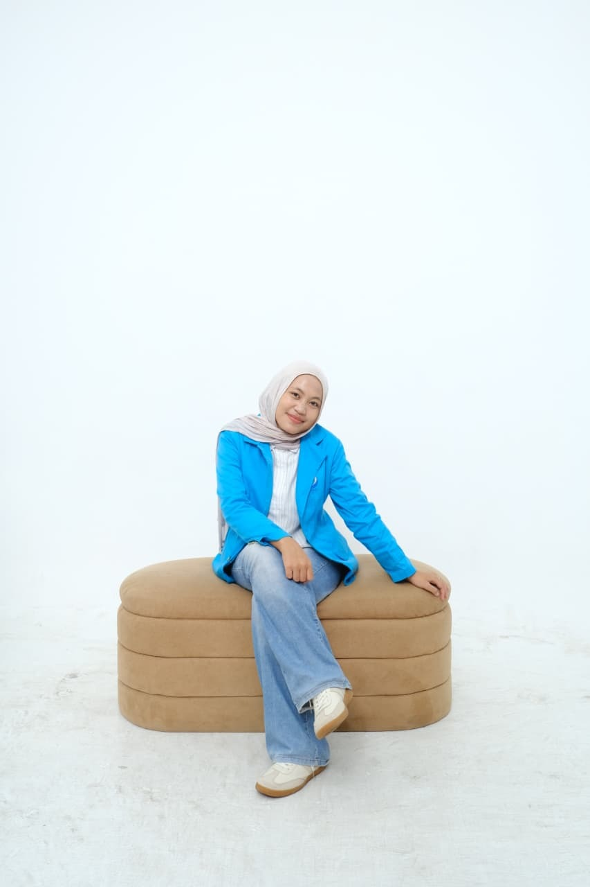

Mahasiswa Teknik Pengolahan Limbah | PPNS
Saya adalah mahasiswa baru Politeknik Perkapalan Negeri Surabaya, jurusan Teknik Pengolahan Limbah. Memiliki minat dalam pengembangan organisasi, kepemimpinan, dan event pembahasan isu-isu politik daerah. Saya memiliki kemampuan interpersonal yang baik seperti manajemen waktu, kerja sama tim, dan public speaking.
D4 Teknik Pengolahan Limbah
Teknik Pengolahan Minyak, Gas, dan Petrokimia
Ketua Umum (2023 - 2024)
Wakil Ketua Merakurak (2024 - 2028)
Komisi Kontroling Hima Prodi (2025 - Sekarang)
Sekertaris Remaja Masjid (2022 - 2027)
Anggota Devisi Hubungan Eksternal
DEVISI ACARA
Penerimaan Tamu Ambalan SMK
2023DEVISI ACARA
Pesta Siaga dan Penggalang
2025DEVISI KORLAP
Maulid Nabi Muhammad SAW
2024DEVISI KORLAP
Lomba dan Kemah Penggalang
2024DEVISI ACARA
Benchmarking Study FKMPI
2025